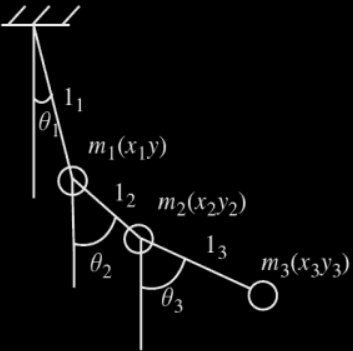

Configuration Spaces
Let us consider mechanical systems that can be thought of as composed of constituent point particles, with mass and position, but with no internal structure. Extended bodies may be thought of as composed of a large number of these constituent particles with specific spatial relationships among them. Extended bodies maintain their shape because of spatial constraints among the constituent particles. Specifying the position of all the constituent particles of a system specifies the configuration of the system. The existence of constraints among parts of the system, such as those that determine the shape of an extended body, means that the constituent particles cannot assume all possible positions. The set of all configurations of the system that can be assumed is called the configuration space of the system. The dimension of the configuration space is the smallest number of independent parameters that have to be given to completely specify a configuration. The dimension of the configuration space is also called the number of degrees of freedom of the system.
For a single unconstrained particle it takes three parameters to specify the configuration. A point particle has a three-dimensional configuration space. If we are dealing with a system with more than one point particle, the configuration space is more complicated. If there are k separate particles we need 3k parameters to describe the possible configurations. If there are constraints among the parts of a system the configuration is restricted to a lower-dimensional space. For example, a system consisting of two point particles constrained to move in three dimensions so that the distance between the particles remains fixed has a five-dimensional configuration space: thus with three numbers we can fix the position of one particle, and with two others we can give the position of the other particle relative to the first.
Consider a juggling pin. The configuration of the pin is specified if we give the positions of the atoms making up the pin. However, there exist more economical descriptions of the configuration. In the idealization that the juggling pin is truly rigid, the distances among all the atoms of the pin remain constant. So we can specify the configuration of the pin by giving the position of a single atom and the orientation of the pin. Using the constraints, the positions of all the other constituents of the pin can be determined from this information. The dimension of the configuration space of the juggling pin is six: the minimum number of parameters that specify the position in space is three, and the minimum number of parameters that specify an orientation is also three.
As a system evolves with time, the constituent particles move subject to the constraints. The motion of each constituent particle is specified by describing the changing configuration. Thus, the motion of the system may be described as evolving along a path in configuration space. The configuration path may be specified by a function, the configuration-path function, which gives the configuration of the system at any time.
Generalized Coordinates
The spatial configuration of N dimensionless particles can be determined by N radius vectors r1, r2,...., rN, or by 3N coordinates (Cartesian xi, yi, zi;, spherical ri, θi, φi, etc.). In some cases, the motion of these particles is constrained in a specific manner, that is, under given provisos it cannot be absolutely arbitrary. Then, we say that such a system has mechanical constraints, and the system itself is called constrained; otherwise, the system is called nonconstrained. If some mechanical constraint can be expressed as a function of the coordinates of the particles,
f(r1, r2,...., rN) = 0, (2.1)
we Call them holonomic; otherwise they are called nonholonomic. Examples of systems with holonomic constraints are a pendulum in the field of gravity and gas diatomic molecules with rigid interatomic bonding.
In the presence of k holonomic constraints of the type (2.1), there exist only s = 3N — k independent coordinates. Any s independent variables q1, q2,.... qs (lengths, angles, etc.) that fully determine the spatial configuration of the system are referred to as the generalized coordinates, and their time derivatives q̇1, q̇2,.... q̇s are referred to as the generalized velocities. The relationship between the radius vectors and the generalized coordinates can be expressed by the transformation equations
ri = ri(q1, q2,.... qs) i = 1,2,...,N (2.2)
which provide parametric representations of the old coordinates ri in terms of the new coordinates qi. The corresponding velocities are given by
The transformations are assumed to be invertible, that is, the equations (2.2) combined with the constraint rules (2.1) can be inverted to obtain the generalized coordinates as functions of the radius vectors.
Examples
Consider a triple pendulum as shown in Fig.1. At any instant of time t, the coordinates of masses m1, m2, and m3 are (x1, y1), (x2, y2), (x3, y3), respectively. Thus six coordinates are required and one may think that the system is six-degrees-of-fredoom system. One, however, should remember that these coordinates are not independent but are constrained by relations
x12 + y12 = l12
(x2 - x1)2 + (y2 - y1)2 = l22
(x3 - x2)2 + (y3 - y2)2 = l32
This, since the coordinates (xi, yi) are not independent as they are related by constrains Equations above, they cannot be called generalized coordinates.
On the other hand, if angular displacemente θi are used to specify the locations of masses mi (i = 1, 2,3) at any instant of time, there will be no constraints on θi, which thus form a set of generalized coordinates.